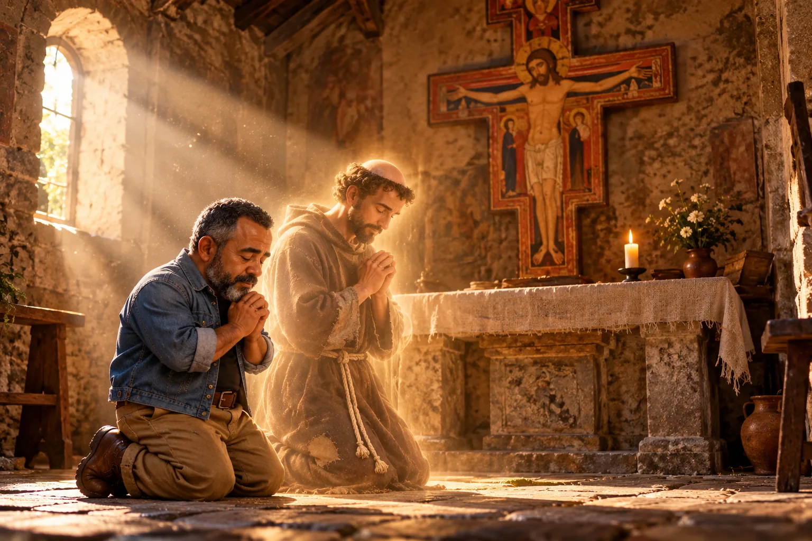

Oração diante do Crucifixo: iluminai as trevas do meu coração
A oração que São Francisco rezou na igrejinha de São Damião, quando ainda não sabia o que Deus queria dele. Uma prece para os dias em que as coisas não saem como a gente previu.

Um jovem perdido diante de um crucifixo
Por volta de 1205, Francisco de Assis ainda não era santo, nem frade, nem fundador de nada. Era um jovem de uns 23 anos, filho de um rico comerciante, que tinha saído de casa certo de que voltaria cavaleiro, coberto de glória. Voltou da guerra derrotado, depois de mais de um ano preso, e doente. Tentou de novo, e no meio do caminho sentiu que Deus o mandava voltar para casa, onde muitos o chamaram de covarde.
Perdido, sem saber o que fazer da própria vida, ele entrou numa igrejinha em ruínas perto de Assis, a de São Damião. Lá dentro restava de pé um grande crucifixo de madeira pintado. Francisco se ajoelhou diante dele e rezou esta oração. Foi logo depois dela que ouviu: “Francisco, vai e repara a minha casa.”
O crucifixo existe até hoje e está guardado na Basílica de Santa Clara, em Assis. A oração é a mais antiga de todas as que Francisco nos deixou.
A oração
Ó Deus altíssimo e glorioso,
iluminai as trevas do meu coração.
Dai-me uma fé reta, uma esperança firme
e uma caridade perfeita,
sensibilidade e entendimento, Senhor,
para que eu cumpra o vosso santo e verdadeiro mandamento.
Amém.
Tradução de A Boa Idade a partir do texto original em latim: “Summe, gloriose Deus, illumina tenebras cordis mei et da mihi fidem rectam, spem certam et caritatem perfectam, sensum et cognitionem, Domine, ut faciam tuum sanctum et verax mandatum. Amen.”
Repare no que ele pede no fim: sensum et cognitionem, sentir e entender. É o pedido de quem está no escuro e ainda não enxerga o caminho. Francisco não pediu riqueza, nem sucesso, nem que os problemas sumissem. Pediu luz para saber o que fazer.
Uma palavra do Sr. Oliveira
Tem vezes em que as coisas não saem como a gente previu. Vêm adversidades onde tínhamos certeza da vitória, e tribulação onde esperávamos calmaria.
Francisco também conheceu isso. Saiu de Assis certo de que voltaria cavaleiro, coberto de glória, e voltou derrotado, preso e doente. Foi nesse coração em trevas que ele se ajoelhou diante do crucifixo e pediu luz.
Assim são as lições de Deus para nós. Ele nos prepara para o extraordinário, e o extraordinário não vem de graça: é preciso conhecer o seu valor e lutar por ele, para aprender a valorizar cada momento vivido a partir dali.
Entregue o seu viver e o seu servir ao Senhor, e Ele cuidará de cumprir cada promessa que te fez.
Você nunca esteve sozinho na sua caminhada. Cada oração sua é ouvida e acompanhada por Deus, e os santos que um dia rezaram como você rezam agora com você.
Creia, ore, busque o Senhor, e você encontrará alívio.
Para rezar hoje
Se o seu coração está em trevas, faça como Francisco: procure um lugar de silêncio, mesmo que seja um cantinho da sua casa, e reze esta oração devagar, uma frase de cada vez. Na parte das “trevas”, diga a Deus, com as suas palavras, o que está escuro aí dentro. Depois fique um pouco em silêncio. A luz nem sempre chega de uma vez, mas ela chega.
Quer conhecer a história completa de Francisco, da renúncia à fortuna até a aprovação da sua Ordem pelo Papa? Leia a biografia em São Francisco de Assis: do filho do rico comerciante ao Pobrezinho de Deus.